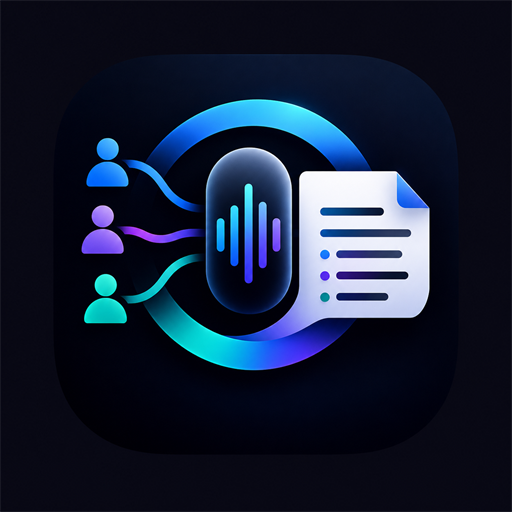

00:00
Pulsa el micrófono para empezar a transcribir (es-ES)
Transcripción profesional

El motor es-ES está entrenado con acentos andaluces, madrileños, gallegos, catalanes, canarios, etc.
La identificación local usa el timbre y tono (frecuencia fundamental y brillo espectral) calibrados de cada voz.
El plan Pro incluye 10 horas al mes de transcripción profesional para audios ya grabados: puntuación automática y separación real de voces. No hay nada que configurar.
Úsala con «📂 Transcribir archivo» para un audio grabado con el móvil, o con «🤖 Mejorar con IA» para reprocesar la reunión que acabas de grabar. El dictado en directo sigue usando el motor del navegador, que es gratuito e ilimitado.
Apunta aquí los nombres y términos que siempre salen mal: apellidos de vecinos, el nombre de la comunidad, tecnicismos. La app los corrige sobre la marcha y además se los avisa al motor profesional para que los acierte.
El plan Pro desbloquea: hablantes ilimitados, acta completa (Markdown/JSON), historial de sesiones, descarga de audio y modo IA.
Configura el perfil de voz para poder identificar quién habla.
Pide a … que lea esta frase en voz alta y natural:
Pulsa «Empezar» y habla durante 6 segundos.
Comunidad, empresa, asociación, órgano público… El acta y su envío quedan ligados a esta ficha para que nunca haya confusiones.
Crea tus propios modelos de acta: la reunión se volcará directamente en tu formato.
En tu Word escribe marcadores donde quieras cada dato: {{ACUERDOS}} {{TAREAS}} {{FECHAS}} {{PREGUNTAS}} {{DESTACADAS}} {{TEMAS}} {{PARTICIPACION}} {{TRANSCRIPCION}} {{RESUMEN}} {{FECHA}} {{DURACION}} {{PARTICIPANTES}} {{ORGANIZACION}} {{PRESIDENTE}} {{SECRETARIO}} {{TITULO}}. El botón «⬇ Word» devolverá tu documento relleno, con tu formato intacto.
Para los audios ya grabados, EscribAI usa un motor de voz profesional que transcribe con mucha más precisión y separa las voces de verdad. Está incluido en el plan Pro y no tienes que configurar nada.
Tu audio no pasa por nuestros servidores: el navegador recibe un permiso temporal de diez minutos y envía el archivo directamente al motor de transcripción.